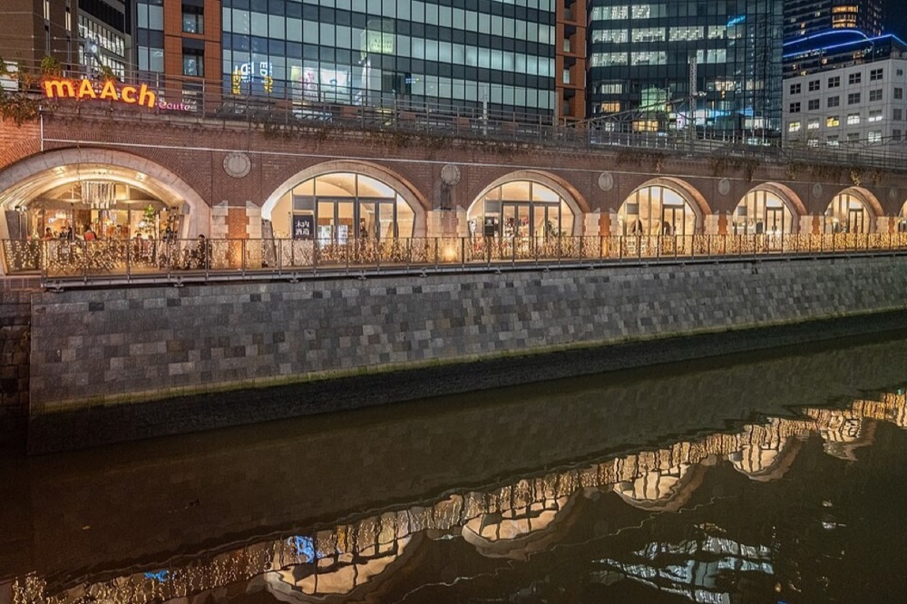

Three example routes
Tap a route to see it on the map. Each one includes lunch at a maid café.
These are examples. We can mix them, and the day adapts to what the family enjoys.
Places we may visit
Examples of the kind of places we'll stop at. The actual route is decided on the day, around what the family enjoys.
- Akihabara Radio KaikanTen floors of figures, trading cards and model kits.Google Maps ↗
- Super PotatoRetro games from the Famicom years, with a small arcade upstairs.Google Maps ↗
- Mandarake ComplexEight floors of used manga, toys and collector items.Google Maps ↗
- Akihabara Gachapon KaikanHundreds of capsule-toy machines. Turn the handle and see what comes out.Google Maps ↗
- Kanda Myojin ShrineA shrine that appears in anime, where people bring new phones for luck.Google Maps ↗
- Animate AkihabaraThe biggest anime goods chain in Japan, for new official goods.Google Maps ↗
- Akihabara Radio CenterTiny electronics stalls under the railway tracks, where Akihabara began.Google Maps ↗
- Taito Station AkihabaraA big arcade with crane games, rhythm games and Taiko no Tatsujin.Google Maps ↗

mAAch ecute Kanda ManseibashiOld railway arches turned into small shops and cafés.Google Maps ↗
Lunch: pick a maid café
Lunch is at a maid café. Here are four options. Tap a tile for details, then tell TOKI which one you'd like.
Hours and fees are from each café's official site, checked October 19, 2026. Please confirm with TOKI before the day.